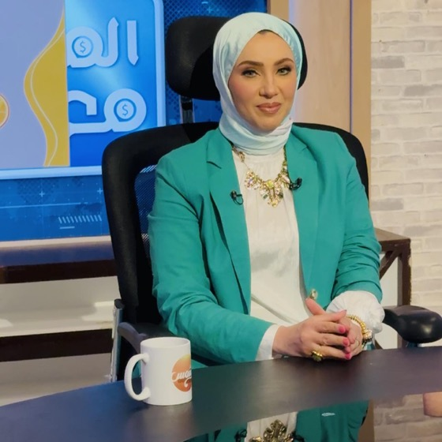
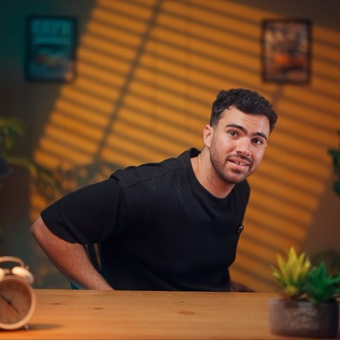

Our story
Founded in 2024, in Egyptian schools
Welmnt began with one conviction: that understanding and nurturing mental wellbeing belongs in a school's ordinary week, not in a referral after something has already broken. We came up through an incubator, raised grant funding, signed our first schools, and learned the difference between a product a school admires and a programme a school books.
What survived that learning is what we do now: show up in the building, in Arabic, with the parents in the room — and leave the school with something it can act on.

Runs the parent workshop and the teacher session, and built Egypt's best-known Arabic-language CBT programme for emotional eating.

Moderates the panels, builds the assessment technology, and owns delivery end to end.
Technology used where it earns its place — and left out where it doesn't.
Students, teachers, parents and administrators in one conversation.
Shifting mental health from something whispered to something planned for.
The same programme in a government school as in an international one.
Keeping close to the research, and changing our minds when it does.